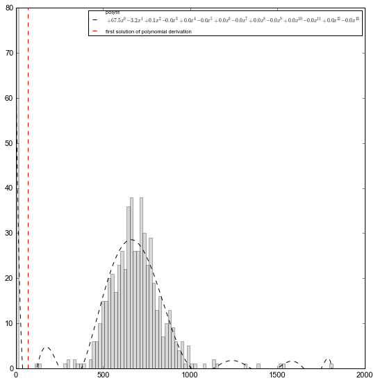

Parameter optimization for IMP.¶
Recover data from previous section by loading the previously saved chromosome and its Hi-C data.
Import the necessary libraries.
# Libraries
from pytadbit import load_chromosome # to load chromosomes
from pytadbit.imp.impoptimizer import IMPoptimizer
First, load the chromosome from previous tutorial (Find Topologically Associating Domains).
# Load the chromosome
my_chrom = load_chromosome('some_path.tdb')
Next, load Hi-C data for each experiment (Hi-C data is not saved inside chromosome objects because of their size):
# Loop over experiments in chromosome and load Hi-C data.
res = 100000
for exp in my_chrom.experiments:
try:
exp.load_hic_data('../../scripts/sample_data/HIC_{0}_{1}_{1}_{2}_obs.txt'.format(
exp.name, my_chrom.name, res))
exp.normalize_hic(factor=1)
except IOError:
print 'file not found for experiment: ' + exp.name
continue
print exp
Experiment k562: resolution : 100Kb TADs : 37 Hi-C rows : 639 normalized : visibility_factor:1 identifier : k562 cell type : wild type restriction enzyme: UNKNOWN project : TADbit tutorial Experiment gm06690: resolution : 100Kb TADs : 34 Hi-C rows : 639 normalized : visibility_factor:1 identifier : gm06690 cell type : cancer restriction enzyme: UNKNOWN project : TADbit tutorial file not found for experiment: k562+gm06690 file not found for experiment: batch_gm06690_k562
/usr/local/lib/python2.7/dist-packages/pytadbit/parsers/hic_parser.py:93: UserWarning: WARNING: non integer values
warn('WARNING: non integer values')
The log indicates that experiment “k562+gm06690” had no file. Such experiment was built ad-hoc in our previous tutorial and needs to be created again by summing the Hi-C matrices from the individual experiments.
my_chrom.experiments['k562+gm06690'] = my_chrom.experiments['k562'] + my_chrom.experiments['gm06690']
We are now going to use the experiment “gm06690” for the modelling. The first thing we need to do is to filter columns with low counts:
exp = my_chrom.experiments['gm06690']
exp.filter_columns(draw_hist=True)
print my_chrom.experiments
/usr/lib/python2.7/dist-packages/numpy/core/numeric.py:460: ComplexWarning: Casting complex values to real discards the imaginary part return array(a, dtype, copy=False, order=order)
[Experiment k562 (resolution: 100Kb, TADs: 37, Hi-C rows: 639, normalized: visibility_factor:1), Experiment gm06690 (resolution: 100Kb, TADs: 34, Hi-C rows: 639, normalized: visibility_factor:1), Experiment k562+gm06690 (resolution: 100Kb, TADs: None, Hi-C rows: 639, normalized: visibility_factor:2), Experiment batch_gm06690_k562 (resolution: 100Kb, TADs: 35, Hi-C rows: 639, normalized: None)]
/usr/local/lib/python2.7/dist-packages/pytadbit/utils/hic_filtering.py:136: ComplexWarning: Casting complex values to real discards the imaginary part round(root, 3), ' '.join( WARNING: removing columns having less than 67.485 counts: 246 247 248 249 250 251 252 253 254 255 256 257 258 259 260 261 262 263 264 265 266 267 268 269 270 271 272 273 274 275 276 277 278 279 280 281 282 283 284 285 286 287 288 289 290 291 292 293 294 295 296 297 298 299 300 301 302 303 304 305 306 307 308 309 310 311 312 313 314 315 316 317 318 319 320 321 322 323 324 639
Optimization of IMP 3D modeling parameters¶
In the previous tutorial we found a specific TAD (region 406 to 448) that seemed quite conserved accross different cell types.
Next, we will optimize the three IMP parameters for this TAD. The IMP parameters to optimize are maximal distance between two non-interacting particles (maxdist), Upper-bound Z-score (upfreq) and Lower-bound Z-score (lowfreq). For details see Bau & Marti-Renom. METHODS [Baù2012].
optimizer = IMPoptimizer(exp, 100, 200, n_models=50, n_keep=25, cutoff=2000)
Preparing to optimize 101 particles
cutoff value corresponds to the distance limit, in nanometers, to consider if two particles of a model are interacting or not. A wise choice corresponds to two time the resolution times the scale factor (0.01), which in this case is \(cutoff = 100Kb \times 2 \times scale = 100000 \times 2 \times 0.01 = 2000\)
Note: Usually the number of models to generate and to keep, should be respectively 500 and 100.
# Optimize parameters. Be aware that this step is CPU intensive. If you want to se the progress, set verbose=True.
optimizer.run_grid_search(n_cpus=8, lowfreq_range=(-1, 0, 0.2), upfreq_range=(0.2, 0.8, 0.2),
maxdist_range=(2000, 3500, 500), verbose=True)
1 0.2 -1 2000 0.01 0.767098689596 2 0.2 -0.8 2000 0.01 0.767098689596 3 0.2 -0.6 2000 0.01 0.764430378531 4 0.2 -0.4 2000 0.01 0.769877194832 5 0.2 -0.2 2000 0.01 0.780250808861 6 0.2 0 2000 0.01 0.777301796587 7 0.4 -1 2000 0.01 0.772393224867 8 0.4 -0.8 2000 0.01 0.772393224867 9 0.4 -0.6 2000 0.01 0.772958040825 10 0.4 -0.4 2000 0.01 0.772804035198 11 0.4 -0.2 2000 0.01 0.778396325547 12 0.4 0 2000 0.01 0.778557679165 13 0.6 -1 2000 0.01 0.780712289443 14 0.6 -0.8 2000 0.01 0.780712289443 15 0.6 -0.6 2000 0.01 0.782092378436 16 0.6 -0.4 2000 0.01 0.783871795733 17 0.6 -0.2 2000 0.01 0.784238133139 18 0.6 0 2000 0.01 0.78502636527 19 0.8 -1 2000 0.01 0.787091209619 20 0.8 -0.8 2000 0.01 0.787091209619 21 0.8 -0.6 2000 0.01 0.786614740119 22 0.8 -0.4 2000 0.01 0.792475503423 23 0.8 -0.2 2000 0.01 0.790170250267 24 0.8 0 2000 0.01 0.788238926824 25 0.2 -1 2500 0.01 0.750871626725 26 0.2 -0.8 2500 0.01 0.750871626725 27 0.2 -0.6 2500 0.01 0.751733987004 28 0.2 -0.4 2500 0.01 0.7582618866 29 0.2 -0.2 2500 0.01 0.771518216885 30 0.2 0 2500 0.01 0.773504325552 31 0.4 -1 2500 0.01 0.756774760421 32 0.4 -0.8 2500 0.01 0.756774760421 33 0.4 -0.6 2500 0.01 0.759833450921 34 0.4 -0.4 2500 0.01 0.765192308125 35 0.4 -0.2 2500 0.01 0.772765218419 36 0.4 0 2500 0.01 0.774522497614 37 0.6 -1 2500 0.01 0.780682090473 38 0.6 -0.8 2500 0.01 0.780682090473 39 0.6 -0.6 2500 0.01 0.781857090923 40 0.6 -0.4 2500 0.01 0.783029516904 41 0.6 -0.2 2500 0.01 0.790986026532 42 0.6 0 2500 0.01 0.789542526866 43 0.8 -1 2500 0.01 0.786372973446 44 0.8 -0.8 2500 0.01 0.786372973446 45 0.8 -0.6 2500 0.01 0.787207607051 46 0.8 -0.4 2500 0.01 0.788810781589 47 0.8 -0.2 2500 0.01 0.795164267021 48 0.8 0 2500 0.01 0.795552255769 49 0.2 -1 3000 0.01 0.736950317918 50 0.2 -0.8 3000 0.01 0.736950317918 51 0.2 -0.6 3000 0.01 0.740476733274 52 0.2 -0.4 3000 0.01 0.753609629213 53 0.2 -0.2 3000 0.01 0.764380672057 54 0.2 0 3000 0.01 0.771119903648 55 0.4 -1 3000 0.01 0.758070700552 56 0.4 -0.8 3000 0.01 0.758070700552 57 0.4 -0.6 3000 0.01 0.752965160316 58 0.4 -0.4 3000 0.01 0.761098324731 59 0.4 -0.2 3000 0.01 0.774111941221 60 0.4 0 3000 0.01 0.775126798787 61 0.6 -1 3000 0.01 0.772880007549 62 0.6 -0.8 3000 0.01 0.772880007549 63 0.6 -0.6 3000 0.01 0.771506004428 64 0.6 -0.4 3000 0.01 0.775450414 65 0.6 -0.2 3000 0.01 0.786066844799 66 0.6 0 3000 0.01 0.791412592662 67 0.8 -1 3000 0.01 0.786054130073 68 0.8 -0.8 3000 0.01 0.786054130073 69 0.8 -0.6 3000 0.01 0.78560321088 70 0.8 -0.4 3000 0.01 0.784784920366 71 0.8 -0.2 3000 0.01 0.793887281274 72 0.8 0 3000 0.01 0.796732555769 73 0.2 -1 3500 0.01 0.739942301447 74 0.2 -0.8 3500 0.01 0.739942301447 75 0.2 -0.6 3500 0.01 0.74297913941 76 0.2 -0.4 3500 0.01 0.751257211108 77 0.2 -0.2 3500 0.01 0.772119574201 78 0.2 0 3500 0.01 0.772849566162 79 0.4 -1 3500 0.01 0.745002332126 80 0.4 -0.8 3500 0.01 0.745002332126 81 0.4 -0.6 3500 0.01 0.746930311926 82 0.4 -0.4 3500 0.01 0.751131192823 83 0.4 -0.2 3500 0.01 0.768242207472 84 0.4 0 3500 0.01 0.765639010622 85 0.6 -1 3500 0.01 0.757275221091 86 0.6 -0.8 3500 0.01 0.757275221091 87 0.6 -0.6 3500 0.01 0.759466814558 88 0.6 -0.4 3500 0.01 0.757620114436 89 0.6 -0.2 3500 0.01 0.77102095279 90 0.6 0 3500 0.01 0.773079965496 91 0.8 -1 3500 0.01 0.766944515046 92 0.8 -0.8 3500 0.01 0.766944515046 93 0.8 -0.6 3500 0.01 0.769696862072 94 0.8 -0.4 3500 0.01 0.777119886412 95 0.8 -0.2 3500 0.01 0.778091343506 96 0.8 0 3500 0.01 0.778697968972
Note
The above warning is given when a small matrix is loaded. TADbit has a filtering function that is applied to all Hi-C matrices with the aim of removing entire rows with very low counts. Those rows/colums are treated then for modeling as “missing-data” points. This flitering function can only be applied for relatively large matrices.
Note
By default TADbit does not store the models generated during the optimization, however, in case they are needed, the option savedata may allow to store them.
Optimizing from Experiment¶
The exact same as above can be done from Experiment objects directly:
#optimizer = exp.optimal_imp_parameters(100, 200, n_cpus=8, n_models=50, n_keep=25, cutoff=1000,
# lowfreq_range=(-1, 0, 0.2), upfreq_range=(0.2, 0.8, 0.2),
# maxdist_range=(2000, 3500, 500),
# verbose=False)
Visualize the results¶
optimizer.write_result('results.log')
# Visualize the results of the optimization.
optimizer.plot_2d()
We can also ask to mark on the plot the best N combination of parameters with the “show_best” parameter.
# Visualize the results of the optimization and mark the best 10 parameter sets
optimizer.plot_2d(show_best=20)

axes_range = [[float(i) for i in optimizer.scale_range],
[float(i) for i in optimizer.maxdist_range],
[float(i) for i in optimizer.upfreq_range],
[float(i) for i in optimizer.lowfreq_range]]
print axes_range
[round(i, 3) for i in axes_range[3]]
result = optimizer._result_to_array()
wax = [round(i, 3) for i in axes_range[0]]
zax = [round(i, 3) for i in axes_range[1]]
xax = [round(i, 3) for i in axes_range[3]]
yax = [round(i, 3) for i in axes_range[2]]
sort_result = sorted([(result[i, j, k, l], wax[i], zax[j], xax[l], yax[k])
for i in range(len(wax))
for j in range(len(zax))
for k in range(len(yax))
for l in range(len(xax))
if not np.isnan(result[i, j, k, l])
], key=lambda x: x[0],
reverse=True)[0]
print sort_result
[[0.01], [2000.0, 2500.0, 3000.0, 3500.0], [0.2, 0.4, 0.6, 0.8], [-1.0, -0.8, -0.6, -0.4, -0.2, 0.0]] (0.79673255576921265, 0.01, 3000.0, 0.0, 0.8)
One can also visualize the parameter optimization according to ne of the three optimization parameters.
# Visualize the results of the optimization based on the lowfreq parameter.
optimizer.plot_2d(axes=('upfreq', 'lowfreq', 'maxdist', 'scale'),show_best=10)

optimizer.plot_2d(skip={"scale":0.01}, show_best=10)
TADbit also provides the possibility to view it all together in a 3D plot (note that, while here its a static image, inside matplotlib GUI you would be able to turn around and zoom):
# Visualize the results of the optimization using a 3D representation with the three optimization parameters in the axis.
optimizer.plot_3d(axes=('scale', 'maxdist', 'upfreq', 'lowfreq'))

optimizer.run_grid_search(n_cpus=8, lowfreq_range=(-1., -0.0, 0.2), upfreq_range=(0.6, 1, 0.1),
scale_range=[0.01], maxdist_range=[2000,2250,2500,2750,3000], verbose=False)
optimizer.plot_2d()
optimizer.plot_2d(show_best=100)
optimizer.write_result('results.log')
optimizer2 = IMPoptimizer(exp, 100, 200, n_models=50, n_keep=25, cutoff=2000)
Preparing to optimize 101 particles
optimizer2.load_from_file('results.log')
optimizer2.results.keys()[105]
('0.01', '3500', '0.8', '-0.2')
optimizer2.plot_2d(show_best=20)
Retrieve best parameters¶
Once done, best results can be returned as a dictionary to be used for modeling (see next section of the tutorial)
config = optimizer.get_best_parameters_dict(reference='gm cell from Job Dekker 2009')
print config
{'maxdist': 2750.0, 'upfreq': 0.8, 'kforce': 5, 'reference': 'gm cell from Job Dekker 2009', 'lowfreq': 0.0, 'scale': 0.01}